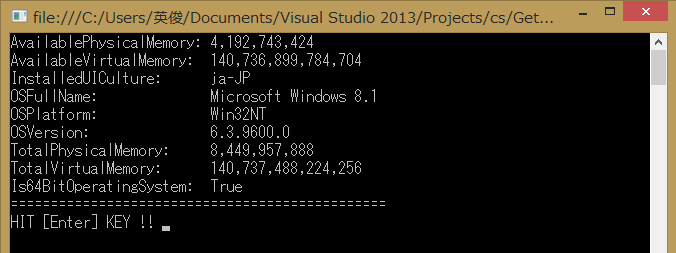
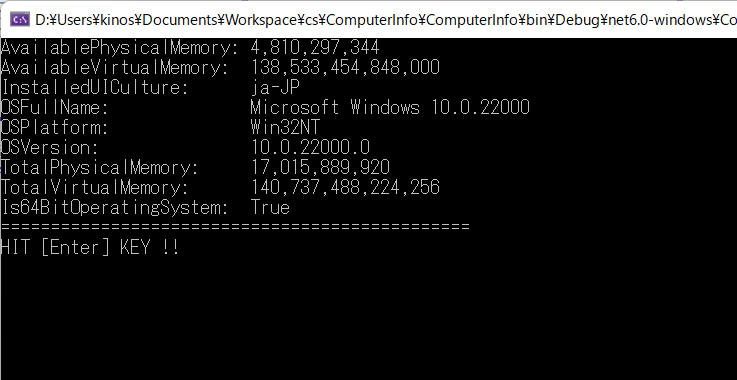

コンピューターのメモリ、読みこまれているアセンブリ、コンピューター名、オペレーティングシステムなどに関する情報を取得するためのプロパティを提供します。
継承階層
System.Object
Microsoft.VisualBasic.Devices.ComputerInfo
名前空間: Microsoft.VisualBasic.Devices
アセンブリ： Microsoft.VisualBasic (Microsoft.VisualBasic.dll 内)
| 名前 | 説明 | |
| public | AvailablePhysicalMemory | コンピューターの空き物理メモリの合計サイズを取得します。 |
| public | AvailableVirtualMemory | コンピューターの空き仮想アドレス空間の合計アドレスを取得します。 |
| public | InstalledUICulture | オペレーティングシステムにインストールされた現在のUIカルチャーを取得します。 |
| public | OSFullName | オペレーティングシステムの完全名を取得します。 |
| public | OSPlatform | コンピューターで使用されているオペレーティングシステムのプラットフォームIDを取得します。 |
| public | OSVersion | コンピューターで使用されているオペレーティングシステムのバージョンを取得します。 |
| public | TotalPhysicalMemory | コンピューターの物理メモリの合計サイズを取得します。 |
| public | TotalVirtualMmory | コンピューターの仮想アドレス空間の合計サイズを取得します。 |
環境：
開発環境： Visual Studio 2013, C#,
.NET 4.0
ＯＳ： Windows8.1
| コンパイラ : | Visual Studio 2013, | |
| .NET Framework, | 4.0 | |
| OS : | Windows8 home, | |
| コンパイラ : | Visual Studio 2022, | Version 17.1.6 |
| .NET, | 6 | |
| OS : | Windows11 home, | Version 10.0.22000.675 |
using System;
using System.Collections.Generic;
using System.Linq;
using System.Text;
using Microsoft.VisualBasic;
namespace ComputerInfo
{
class Program
{
static void Main(string[] args)
{
var info = new Microsoft.VisualBasic.Devices.ComputerInfo();
Console.WriteLine("AvailablePhysicalMemory: " + info.AvailablePhysicalMemory.ToString("#,00"));
Console.WriteLine("AvailableVirtualMemory: " + info.AvailableVirtualMemory.ToString("#,00"));
Console.WriteLine("InstalledUICulture: " + info.InstalledUICulture);
Console.WriteLine("OSFullName: " + info.OSFullName);
Console.WriteLine("OSPlatform: " + info.OSPlatform);
Console.WriteLine("OSVersion: " + info.OSVersion);
Console.WriteLine("TotalPhysicalMemory: " + info.TotalPhysicalMemory.ToString("#,00"));
Console.WriteLine("TotalVirtualMemory: " + info.TotalVirtualMemory.ToString("#,00"));
Console.WriteLine("Is64BitOperatingSystem: " + Environment.Is64BitOperatingSystem);
Console.WriteLine("===============================================");
Console.Write("HIT [Enter] KEY !! ");
Console.ReadLine();
}
}
}
<?xml version="1.0" encoding="utf-8"?>
<asmv1:assembly manifestVersion="1.0" xmlns="urn:schemas-microsoft-com:asm.v1" xmlns:asmv1="urn:schemas-microsoft-com:asm.v1" xmlns:asmv2="urn:schemas-microsoft-com:asm.v2" xmlns:xsi="http://www.w3.org/2001/XMLSchema-instance">
<assemblyIdentity version="1.0.0.0" name="MyApplication.app"/>
<trustInfo xmlns="urn:schemas-microsoft-com:asm.v2">
<security>
<requestedPrivileges xmlns="urn:schemas-microsoft-com:asm.v3">
<!-- UAC マニフェスト オプション
Windows のユーザー アカウント制御のレベルを変更するには、
requestedExecutionLevel ノードを以下のいずれかで置換します。
<requestedExecutionLevel level="asInvoker" uiAccess="false" />
<requestedExecutionLevel level="requireAdministrator" uiAccess="false" />
<requestedExecutionLevel level="highestAvailable" uiAccess="false" />
requestedExecutionLevel ノードを指定すると、ファイルおよびレジストリの仮想化は無効になります。
旧バージョンとの互換性のためにファイルおよびレジストリの仮想化を
使用する場合は、requestedExecutionLevel ノードを削除します。
-->
<requestedExecutionLevel level="asInvoker" uiAccess="false" />
</requestedPrivileges>
</security>
</trustInfo>
<compatibility xmlns="urn:schemas-microsoft-com:compatibility.v1">
<application>
<!--このアプリケーションが動作するように設計されている、Windows のすべてのバージョンの一覧。
Windows は最も互換性の高い環境を自動的に選択します。-->
<!--アプリケーションが Windows Vista で動作するように設計されている場合は、次の supportedOS ノードのコメントを解除します-->
<supportedOS Id="{e2011457-1546-43c5-a5fe-008deee3d3f0}"></supportedOS>
<!-- アプリケーションが Windows 7 で動作するように設計されている場合は、次の supportedOS ノードのコメントを解除します。-->
<supportedOS Id="{35138b9a-5d96-4fbd-8e2d-a2440225f93a}"/>
<!--アプリケーションが Windows 8 で動作するように設計されている場合は、次の supportedOS ノードのコメントを解除します-->
<supportedOS Id="{4a2f28e3-53b9-4441-ba9c-d69d4a4a6e38}"></supportedOS>
<!-- アプリケーションが Windows 8.1 で動作するように設計されている場合は、次の supportedOS ノードのコメントを解除してください-->
<supportedOS Id="{1f676c76-80e1-4239-95bb-83d0f6d0da78}"/>
</application>
</compatibility>
</asmv1:assembly>

[図] Windows 8.1 による動作結果

[図] Windows11, .NET6, VS2022 による動作結果
補足： Build Number が 22000 以上であれば Windows11 らしいのですが、OSFullName は Windows 10 に見えてしまって残念な結果となりました。
VS2022 の環境で .NET6 プロジェクトとして使用したとき、下記の通り <UseWindowsForms>true</UseWindowsForms> を直接書き込みする必要がありました。
これを行わないと参照情報として Microsoft.VisualBasic.Forms を取り込んでくれず動作できませんでした。
[ファイル名： "ComputerInfo.csproj"]
<Project Sdk="Microsoft.NET.Sdk">
<PropertyGroup Label="Globals">
<SccProjectName>SAK</SccProjectName>
<SccProvider>SAK</SccProvider>
<SccAuxPath>SAK</SccAuxPath>
<SccLocalPath>SAK</SccLocalPath>
</PropertyGroup>
<PropertyGroup>
<OutputType>Exe</OutputType>
<TargetFramework>net6.0-windows</TargetFramework>
<ImplicitUsings>enable</ImplicitUsings>
<Nullable>enable</Nullable>
<UseWindowsForms>true</UseWindowsForms>
<PlatformTarget>AnyCPU</PlatformTarget>
<Platforms>AnyCPU</Platforms>
<FileVersion></FileVersion>
<AssemblyVersion></AssemblyVersion>
</PropertyGroup>
</Project>
サンプルプログラム ダウンロード
https://msdn.microsoft.com/ja-jp/library/microsoft.visualbasic.devices.computerinfo(v=vs.100).aspx
| 2022-05-15 | - | Windows11, VS2022 情報にて更新 |
| 2015-05-16 | - | 新規作成 |